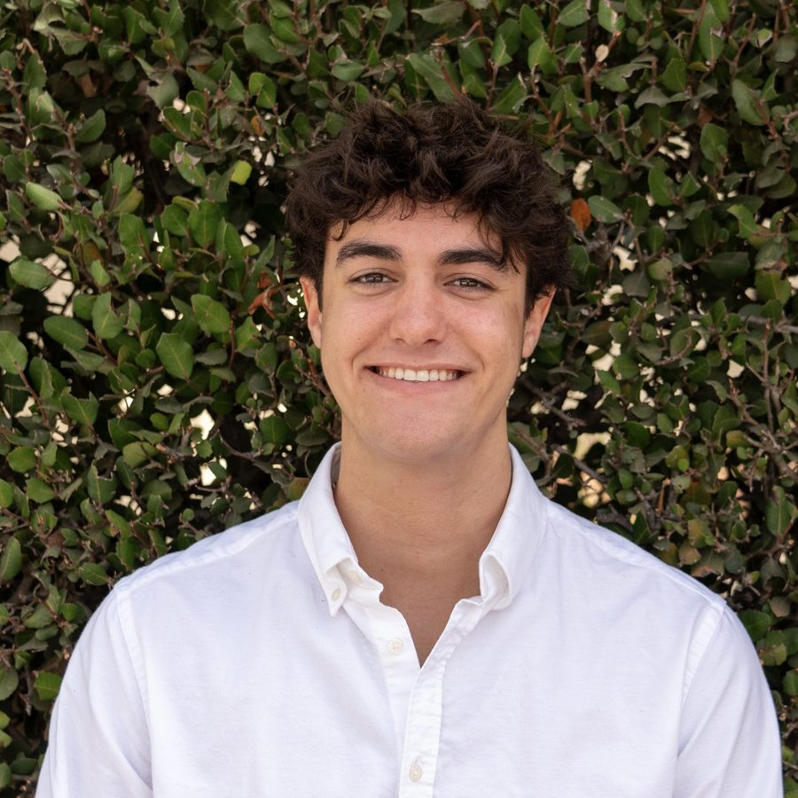
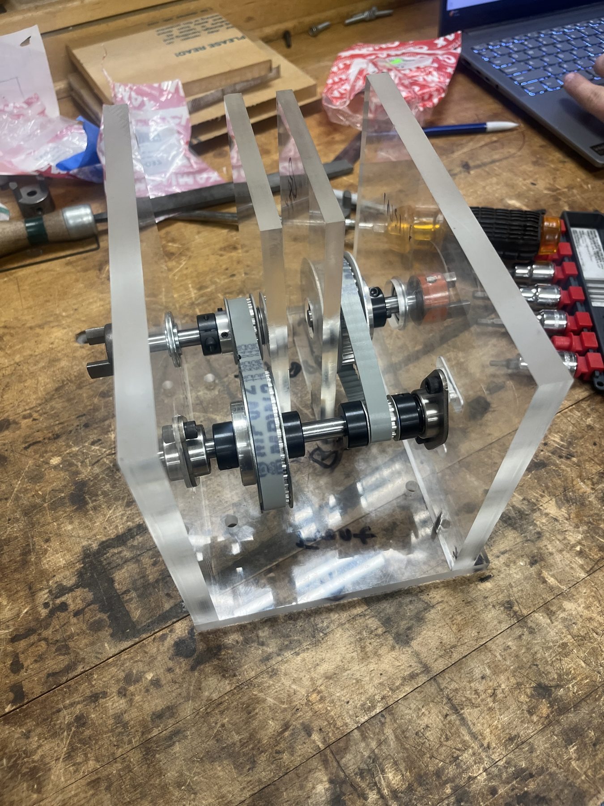
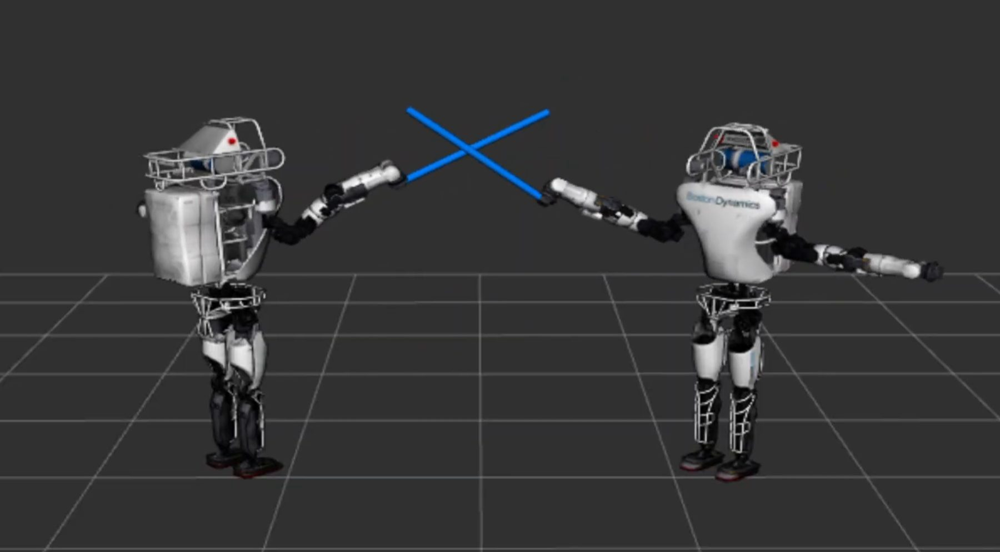

About me
When I was nine, I skipped school to watch Space Shuttle Endeavour ride a 747 over the Golden Gate Bridge on its way to retirement. I remember being in awe, and a little confused. How could that be the end? Looking back, that was the moment I caught the bug.
I've been following it ever since. I launched a hybrid nitrous oxide rocket in the Appalachians at fourteen, tracked asteroids at Pomona's Brackett Observatory, helped build a TIRF microscope in a biophysics lab, and built a drone from scavenged shop parts that, on one memorable night, sent me to the student health clinic for stitches. (I went right back to the scene of the crime.) Through all of it, one thing stayed consistent: I'm a maker. I want the math to turn into something I can hold.
Now I'm at Caltech studying mechanical engineering with an aerospace minor on the robotics track. I'm most excited by planetary deployable systems, mechatronics, and mechanisms, the stuff that has to unfold, drive, grab, and survive on another world.
When I'm not in the shop, you might find me in the middle infield for the Caltech Beavers or scuba diving with sharks in the Galápagos. Yes, the science nerd is also the athlete. I get that a lot.
- Studying
- Mechanical Engineering (BS) and Aerospace Engineering (minor), Caltech
- Before that
- Physics (BA), Pomona College
- Focus
- Planetary deployables, mechatronics, mechanisms, and space engineering
Projects
 Rocker-Bogie RoverCaltech, June 2026
Rocker-Bogie RoverCaltech, June 2026
 JPL Multi-Asteroid Mission DesignCaltech, Spring 2026
JPL Multi-Asteroid Mission DesignCaltech, Spring 2026

Two-Stage Belt Drive TransmissionCaltech, May 2026
ROS2 Robot Lightsaber Duel SimulationCaltech Robotics, Fall 2025 Autonomous Underwater VehicleHarvey Mudd College, Spring 2025
Autonomous Underwater VehicleHarvey Mudd College, Spring 2025
 Vacuum CannonPomona College, Spring 2025
Vacuum CannonPomona College, Spring 2025
 Haptic Glove-Controlled QuadcopterPomona College, Spring 2024
Haptic Glove-Controlled QuadcopterPomona College, Spring 2024
 Tank TransmissionPomona College, 2024
Tank TransmissionPomona College, 2024


Skills and distinctions
Design and simulation
- SolidWorks
- ANSYS
- Thermal Desktop
- COMSOL
- MATLAB
Code
- Python
- C++
- Rust
- R
- ROS2
- LabVIEW
- OpenCV
Electronics
- Arduino
- ESP32
- Raspberry Pi
- Teensy
- Motors and drivers
- Servos
- OLED displays
- Sensors
- LiPo power
- Soldering
Fabrication
- Welding
- 3D printing
- General shop use
- Caltech Athletics Rookie of the Year2026, Caltech Baseball
- Jack Real Aero Club of Southern California ScholarshipAwarded for aerospace study at Caltech
- Toni and Bob Perpall SURF FellowCaltech, Blanquart Lab
- SURF Presentation Perpall FinalistCaltech
- SURP FellowPomona College, McCluskey Lab
- Conference presentationsOptica 2024, APS Global Physics Summit 2025, APS DFD 2026
- Shop and welding certifiedCaltech, Pomona College, and Harvey Mudd
- 3.97 GPACaltech
Leadership and service
Pitcher and Middle Infielder
Caltech Baseball, 2025 to present
I ended my brief semi-retirement and joined the Beavers, leading the team in batting average and OPS. Named the 2026 Caltech Athletics Rookie of the Year.
Head Waiter and Grillmaster
Fleming House, Caltech, 2026 to present
I run all Fleming House dinners and grill steaks, chicken, and salmon for 30+ residents every Thursday night.
Treasurer
Caltech Ski Club, 2025 to present
I manage and allocate the club's funding for winter trips to Mammoth.
Physics Outreach Program Leader
Pomona College, 2024 to 2025
Led the revival of a dormant outreach program that brings local elementary schoolers into Pomona's physics labs for 20+ hands-on experiments.
Founder, Physics and Philosophy Club
Pomona College, 2024 to 2025
Started a weekly discussion group with a friend that grew to 25+ students, covering everything from Aristotle to the Copenhagen interpretation.
Physics Thesis Writing Partner
Pomona Center for Speaking, Writing, and the Image, 2024 to 2025
The first-ever writing partner for physics theses: reader, editor, and advisor for all 19 senior physics theses.
Secretary, Society of Physics Students
Pomona College, 2024 to 2025
Organized events like the Parents' Day show at Brackett Observatory and helped SPS team up with other physics clubs to share funding.
Physics Lab TA
Pomona College, Fall 2024
Helped run first-year labs, from measuring laser wavelengths with diffraction gratings to channeling solar energy into circuits.